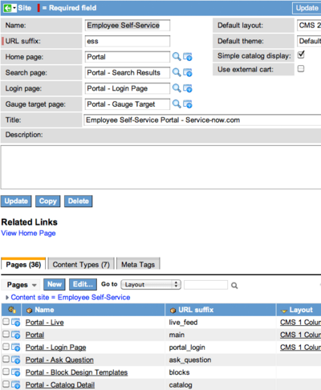

Case Study - Employee Self-Service Portal
Contents
1 Overview
The Employee Self-Service (ESS) Portal is a combination of many design contributions from the ServiceNow community. The goal was to deliver a portal that
- is configurable
- adheres to best practices in self-service design
- illustrates theme use
- follows corporate design guidelines
ESS Portal use is typically based on the people using the data within your system and how easy it is to train them. Self-service users can make requests, view articles, log incidents, interact through live feed or chat, and search the knowledge base through a user-friendly website.
For those who have been using the Content Management System (CMS) for years, the ESS Portal may be new. CMS initially started out with two site demos: Austere and Visionary. While the initial site demos were useful, they only represented a starting point for building out extended functionality in the portal. The ESS Portal is designed as a working portal template and a delivery mechanism for new functionality. New ESS Portal functionality is added continuously throughout the development cycle. Substantial efforts by the ServiceNow community have allowed us to roll good designs back in as demo data for public use by the entire community.
By default, the URL for the self-service portal is:
http://instancename.service-now.com/ess/
1.1 Recommended Use
If the ESS Portal meets your business needs, you have a few options. Here are some recommended use cases for the ESS Portal:
- Lightly edit the default ESS Portal site and use it.
- Copy the ESS Portal to create a new site, then use the default ESS Portal as a reference guide to the new site. If the new site needs to be heavily customized to meet your business needs, take a look at the site building examples.
- If you create your own site, working with a copy of the ESS Portal can help you understand the basic requirements for a website. For example, at the very least a site needs a homepage, a search results page, a catalog item detail page, and a knowledge detail page.
- Making your own theme allows you to explore and edit the base system CSS without risking any changes to the base system. Having a working example can help you troubleshoot any issues that may arise in your site building project.
Ensure that you receive updates and new code improvements by working with a copy of the ESS Portal. Any change you make to base system code is respected by any subsequent updates that ServiceNow pushes to your system. Given the simplicity of setting up a new site, it makes sense to leave the ESS Portal code as a read-only master template so you can obtain the newest functionality with just an upgrade and always have a working master system to work from. If you would like to keep current with updated code and demo examples, use the pages and the entire ESS Portal as read-only master templates. It is very easy to copy pages and an entire site.
2 ESS Portal Site Reference
The pages in the ESS Portal can be grouped by their functional purpose within the site. The homepage and parent pages provide navigational menus within the site. Other pages are specifically designed to handle dynamic data, forms, and record details within the system. This section explains the different types of pages and how they relate to the site as a whole.
{kind=link}
2.1 Portal Homepage
The homepage is designed to immediately communicate the purpose of the site and provide clear paths to common actions within the system. As plugins are activated within the system, menu items are added to the homepage along with their corresponding detail pages. For example, notice that on the right side of the header (item 1), the chat queue option is activated. Also notice that in the far right of the content area (item 2), at the bottom of the "Get Help" menu, the "Live Feed" link is active (turned on when the "Live Feed" plugin is activated).
2.1.1 Item 1: Header Block
The header is designed to be a single block that manages a large part of the branding and site navigation. Managing these two areas should be easy, so the header block provides a wide range of configuration options. For more detailed information about using header blocks, see the discussion of header blocks on the Using Content Blocks wiki page. Briefly, the header block is a dynamic block that calls many UI macro elements for functional and display options. Following is a look at some of the base system options being used in this header.
There are two menu systems in this header block:
- a standard drop-down (site-wide link collective) below the logo
- a super menu located to the left of the logged in user's name
Both menus work together to provide persistent system navigation. The Home, Order Things, Knowledge, and Get Help options on the drop-down menu each provide site overview pages; they are also used as parent pages. All actions that are specific to the logged in user are organized within this menu. Super menus group actions in functional areas of the user interface. While the Account Settings Menu in this example is a simple design, super menus are a powerful way to design very complex menus.
The drop-down menu was created to provide a consistent collection of site-wide links prominently visible to the user.
{kind=link}
The super menu was coded in the CMS as part of the ServiceNow corporate website project. It is used here to provide a useful secondary menu with minimal impact on the interface. The super menu was created to show common self-service actions near the displayed user name. The links themselves point to pages that use iframes to pull in the corresponding data. For more information, see the discussion of iFrames.
One of the unique qualities of the super menu is that it allows you to embed menus within menus. While the super menu is similar to the other base system menus and is comprised of menu sections and menu items, the main difference is that menu sections can contain another menu. This enables the designer to group larger menus together in a hierarchical manner. Another noticeable difference from the other menus is the introduction of the header and the footer fields on the menu form (which it only shares with horizontal blocks menus). These fields allow you to stack menus on top of menus. Once you get a feel for the possibilities, you can see the many design options. For a more advanced example, see Active Super Menu.
Here is the functional breakdown of the items in the menu:
- Approvals provides a list of current approvals and their status
- Open Orders is a list of open requested items that have been ordered by the logged in user.
- Get Help Status is a list of incidents opened by the logged in user.
- Your Profile links to the user profile record within the system.
- CMS Administration is a useful page. Currently, there is an administration (navigation) menu that points to many related wiki articles, descriptive menus for all blocks and navigation menus, and a prototype for passing dynamic categories. In the future, this page will be the gateway to new functionality and community examples in the CMS. This portion of the ESS Portal is described in greater detail in the Site Administration section.
2.1.1.2 System Actions
Logo - image field that allows you to upload an image and links back to the site homepage.
Text - supplementary text field to communicate the title or purpose of the site.
Logout - displays the current user login name and a log out link.
Font Sizer - a useful accessibility tool for changing font sizes globally (use relative font declarations in your CSS to enable this to work).
Search Bar - can search globally or any number of custom search groups you specify (by default, the non-global search groups reference catalog items and the knowledge base).
Chat Queue - displays any chat queue you reference (the example uses the Service Desk Chat queue) from the header as an easy, one-click entrance into the chat application. This option only appears if the chat plugin is activated and a queue is referenced in the header. To learn more, see Making Help Desk Chat Accessible to End Users.
2.1.2 Item 2: Portal Block Menu
Like the header menus, the menus in the content area serve a unique purpose. These menus allow site administrators to create float grids for a variety of layout possibilities. Inspiration for these come both from our community and popular websites such as the Apple Store, Google Shopping, and Amazon.com. Imagery used in such sites immediately grabs the eye and communicates meaning to those browsing the homepage.
Linking all pages, forms, and other content together can be a daunting task. Header blocks are designed to make branding easier and navigation menus enable site administrators to manage links and navigation easily. As you click through the ESS Portal, see how linking can be managed in a few different ways. By using navigation menus together with list blocks, site administrators have a powerful blend of static and dynamic navigation capabilities at their fingertips.
For more details, see Navigation Menu Blocks.
The footer is simple, but the "Powered by ServiceNow" statement is important because otherwise people do not immediately understand that this portal is part of the ServiceNow system. For another interesting example of a footer, see Building Our Website in CMS.
2.2 Page Templates - Looking Beyond the Homepage
The homepage is the most critical introduction to your site, but the majority of a site is the pages that support the homepage. Now we'll stop looking at the ESS Portal as an observer and begin viewing it as a site administrator and builder of templates. In this tutorial on building our corporate website, we start with page templates and move to the complexities of homepage design. Page templates help you work toward a single design for the entire site. This design work needs to take place first because it is the foundation and structural blueprint of the entire site.
Look at the site record in this illustration. The ESS Portal site record is a collection of all site child pages. Attributes defined at the site level, such as layout and theme, apply to all pages in the site, but you can make different selections for individual pages.

{kind=link}
Notice the four page reference fields in the left column of the site record.
- Home Page - the landing page for your site (mandatory)
- Search Page - the landing page for your search results (mandatory)
- Login Page - a standalone login page (useful if you want to enforce authentication for your entire CMS site)
- Gauge Page - detail for any gauges used in the site
These pages are the first steps in understanding page templates and defining site defaults. View the Pages related list at the bottom of the site record; it is sorted by layout. Notice that three pages have a layout specified and all of the others are blank. This shows that thought has been put into the common design of the site, not just the exceptions. First, design for what is common throughout the site, not for the exceptions. One of the biggest beginner design mistakes is to put the majority of effort into the homepage, leaving the design of all supporting pages as an afterthought.
2.2.1 Layout and Column Considerations
The header and footer are shared elements, so they are not a focus here. Instead think of the two columns below the header and the wide variety of content that needs to be displayed within the dimensions of the columns. Generating a dynamic list and having it appear within a column around 200px wide is the easy part of this layout. The greater challenge is ensuring that the main content area has enough space to display any forms you may want to call from ServiceNow. Addressing these considerations is a big objective for page templates.
When creating a common layout, consider the following:
- Left hand column (1) - Both the Common Answers and Current Issues blocks are dynamic lists that are specifically designed to render within a narrow column. Each list uses the Type setting of navigation_list_style, which uses HTML and CSS to restrict width and use smaller font sizes.
- Main Content Column (2) - One of the reasons a fluid layout was selected for the content area of the ESS Portal was to allow large and complex forms to be displayed within the center column without horizontal scrolling.
{kind=link}
2.2.2 Page Template Use
Now that the ESS Portal homepage is defined, move on to the pages that use the page template. Every page except the homepage should use a page template. The first master template defines the defaults for the site. This includes all pages (excluding exceptions), the default theme, and the default layout.
When you design your own site, begin with a page template definition so you can define the defaults for the site and not waste time defining redundant values for the pages. Layout and theme values defined at a site level are applied to all pages within the site.
Here are the page level defaults:
- Parent Pages - a master page template that addresses all of the organizational sections (parent pages) and their child pages defined within the site. The ESS Portal site contains three parent pages: Order Things, Knowledge, and Get Help. Because they act as mini homepages within the site, their design may differ slightly from the detail pages.
- Detail Pages - a dynamic page that differs from the parent page (the content area displays a full article or detail instead of an array of related content and navigation menus).
2.2.2.1 Parent Pages
Parent pages are the homepage supporting cast and provide a way to take a large menu system and expand it across a few highly organized pages. Doing this allows the designer to arrange how users navigate the site and have their specific needs met. While the temptation to add many links to the homepage is there, realize that the more links added to the homepage, the more complex the page becomes and the more difficult it is for users to find the links they need. Keep the site simple and use parent pages as secondary navigation in concert with your homepage.
Order Things - Catalog items and services can be requested from the Order Things page. The categories of items to order are displayed, along with quick links to the top requests.
- Selecting a category displays a list of items in the category.
- Selecting the items displays the catalog form for the item, with a shopping cart for making requests.
Knowledge - Knowledge articles can be found through the Knowledge page. The front page displays Highest Rated, Most Viewed, and Current News.
- The search bar at the top searches the entire knowledge base. Results can be refined based on category.
- Feedback, including comments and ratings, can be given about the article.
Get Help - The Get Help portal can be used to ask questions, find answers, and monitor tickets.
- Selecting Something Broken displays a form to submit an incident.
- Selecting Ask a Question displays a form to submit a question.
- Selecting Status displays a list of previously submitted questions and incidents.
2.2.2.2 Detail Pages
Understanding detail pages not only unlocks the mysteries of CMS, it attunes you to the dynamic nature of the system. If you have a large site (over 100 pages), you may need to consider moving to a more dynamic model. Detail pages pull attributes from URL to populate the main content of the page. Without any attributes, the content area is a blank container or iFrame. Without detail pages, the links of your lists will go nowhere, resulting in a "form not found" error message. Detail pages are defined in several places where definitions work together to serve detailed records from the system. For example, the configuration section of the CMS application menu contains the "Page Detail Settings" and "Content Types" forms.
Content types are important as gateways to the data tables in ServiceNow. Like layouts and themes, content types defined for a site become defaults for the site, but you can change the content type settings for individual pages and blocks that need to behave differently.
The important fields in the Content Type form are:
- Type - specifies the database table referenced, which determines the type of content defined in the remaining fields.
- Summary Template - establishes default formatting for list blocks throughout the site. Design the layouts to fit common use. Summary definitions can be overridden by the "Type" field on the List form. The List Definitions module provides a list of . The purpose of the summary template is to give designers all of the fields data that comprise the referenced database table. For more information on how this works, see the excellent example of the power of list definitions from the corporate website.
- Detail Template - ties directly to the a Detailed Content record (created in the Page Detail Settings module), which defines the block placed on the page, as well as all of the fields data that comprise the referenced table. More often than not, the detail of the ServiceNow record is passed back in an iFrame exactly as it looks in the system. If a simplified view of the record is needed, define a simplified detail template. Depending on the data or database tables you plan to use, you may also need additional detail pages defined by content types.
NOTE: These detail pages are mandatory if you plan to access ServiceNow system data. For example, if you are plan to show the service catalog in your CMS site, then you need both a Service Catalog content type (referencing the sc_cat_item table) and a detail page that provides the full view of the item. The ESS Portal site uses only the knowledge base, so required only a knowledge content type (referencing the kb_knowledge table) and a knowledge article detail page. This is explained on the Creating Content Types page.
2.2.2.3 Menu to Detail - Working Examples
To illustrate how parent pages flow into the detail pages, look at the ESS Portal. The three buckets of actions that are organized on the homepage offer a good starting point for understanding the content types (there are seven) defined in the ESS Portal. This section looks at the parent pages that flow to the following detail pages:
- Service catalog detail page - detail page for all catalog items, content items, order guides, and record producers (mandatory for this site).
- Knowledge detail page - used to display full knowledge article detail (mandatory for this site).
2.2.2.3.1 Order Things (Parent Page to Detail)
In this example, a horizontal navigation menu provides a limited catalog category set that links to the catalog item detail. Catalog items and services can be requested from the Order Things page. The categories of things to order are displayed as a vertical navigation menu block, along with a list of quick links to the top requests within the catalog:
{kind=link}
Selecting a category navigates to another page that pulls the corresponding category list of items into an iFrame. The Cart displays for the first time within the flow of the ordering process. There are two types of links on this page:
- Links within the iFframe (catalog items) whose click-throughs are handled because they are contained within an existing iFrame .
- Dynamic List links in the left column. This list pulls knowledge articles and record producers created in the service catalog. Hover over the Delegate roles to group member link and you will see something similar to:
catalog.do?uri=com.glideapp.servicecatalog_cat_item_view.do?sysparm_id=1bc632740a0a0b1f006acf4eae5fce32&sysparm_document_key=sc_cat_item_producer,1bc632740a0a0b1f006acf4eae5fce32
The detail page URL is catalog.do and this page is passed the ID of the record producer. Details are given in the Get Help Example.
{kind=link}
Selecting a catalog item from the list displays the catalog detail with a shopping cart for making requests.
{kind=link}
2.2.2.3.2 Knowledge (Parent Page to Detail)
The content in this example references the Knowledge [kb_knowledge] database table and is entirely list based. This makes it a good illustration of linking between list blocks and detail pages. Content types define the look and feel of the list and the record detail.
{kind=link}
On this page, the individual links in lists all use the URL that is defined in the Summary Template field of the Content Type form. This is similar to the catalog example above, but calls a different detail page, knowledge.do.
knowledge.do?&sysparm_document_key=kb_knowledge,3b0fccee0a0a0b9b00d34b36ea41a43e
Open this page in edit mode and click the pencil on either of the lists stacked in the left column. The Type field identifies the list definition that is an extension of the summary template for the content type. The g:content_summarizer call pulls in the summary code. This shows where you can override the summary definition by placing similar code where this call is located. That is the power of list definitions.
<?xml version="1.0" encoding="utf-8"?>
<j:jelly trim="false" xmlns:j="jelly:core" xmlns:g="glide" xmlns:j2="null" xmlns:g2="null">
<div class="content_list_container">
<div class="content_list_title">${jvar_title}</div>
<div class="content_list_menu_items">
<ul>
<g:for_each_record file="${current}" max="${jvar_max_entries}">
<li>
<g:content_summarizer content="${current}"/>
</li>
</g:for_each_record>
</ul>
</div>
</div>
</j:jelly>
Looking at the knowledge article details, note that it is essentially the same formatting as defined in the rest of the system. It is important to have the rating and feedback as part of the default detail display so that users can give feedback, including comments and ratings, about the article. If you need to remove anything from this detail, remove it from the detail field of the kb_knowledge content type.
{kind=link}
2.2.2.3.3 Search Results (All Pages to Results Detail Page)
The search results page is one of the most important pages in the portal. Before using the Search Results (Global) block, you must define content types to control the actions that occur when a user clicks one of the search results. If no content type is defined for a table, selecting a link on that table renders the results according to the content type DEFAULT.
Following is an example of Search Results (Global) in use:
{kind=link}
2.3 CMS Site Administration
One of the biggest questions in content management is how to incorporate good ideas from the community back into the product. The CMS Administration pages of the ESS Portal are a step in this direction. These pages were created to bridge the gap between the ESS Portal and the documentation on the Wiki.
{kind=link}
Look at the section on who is using the CMS and the dynamic catalog category demo (login as a system administrator):
https://<instance name>.service-now.com/ess/admistration.do